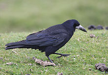
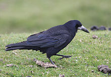

| Rook | |
|---|---|
|  | |
| On Dartmoor, Devon, England | |
| Conservation status | |
| Binomial name | |
| Corvus frugilegus Linnaeus, 1758 |
|
| Rook range |
| Rook | |
|---|---|
|  | |
| On Dartmoor, Devon, England | |
| Conservation status | |
| Binomial name | |
| Corvus frugilegus Linnaeus, 1758 |
|
| Rook range |
The Rook (Corvus frugilegus) is a member of the Corvidae family in the passerine order of birds. Named by Carl Linnaeus in 1758,[2] the species name frugilegus is Latin for "food-gathering".
This species is similar in size (45–47 cm in length) to or slightly smaller than the Carrion Crow with black feathers often showing a blue or bluish-purple sheen in bright sunlight. The feathers on the head, neck and shoulders are particularly dense and silky. The legs and feet are generally black and the bill grey-black.
Rooks are distinguished from similar members of the crow family by the bare grey-white skin around the base of the adult's bill in front of the eyes. The feathering around the legs also look shaggier and laxer than the congeneric Carrion Crow. The juvenile is superficially more similar to the Crow because it lacks the bare patch at the base of the bill, but it loses the facial feathers after about six months. Collective nouns for rooks include building, parliament, clamour and storytelling.[3][4]

{kind=link}
{kind=link}